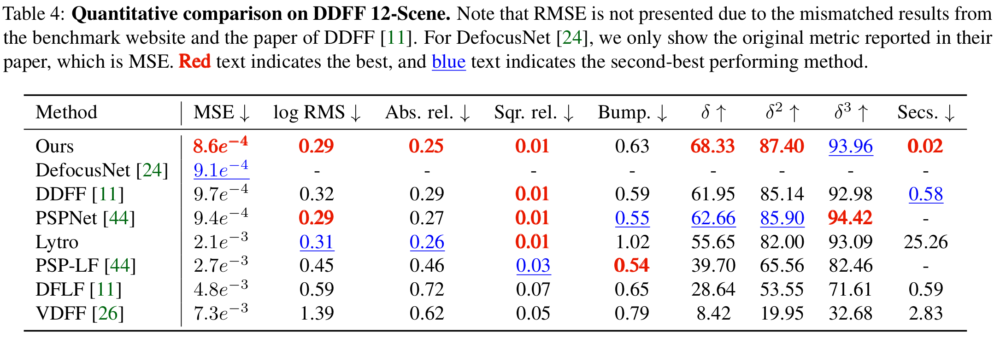
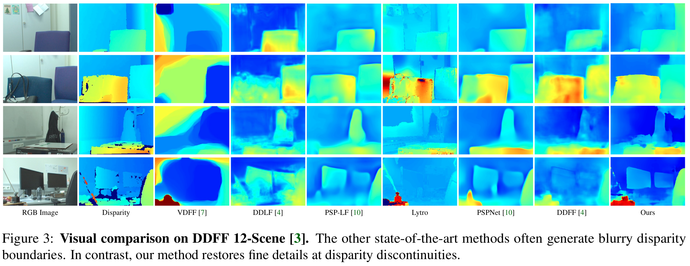
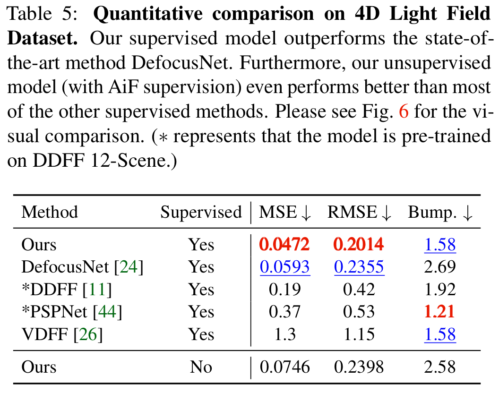
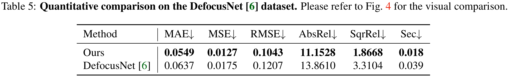
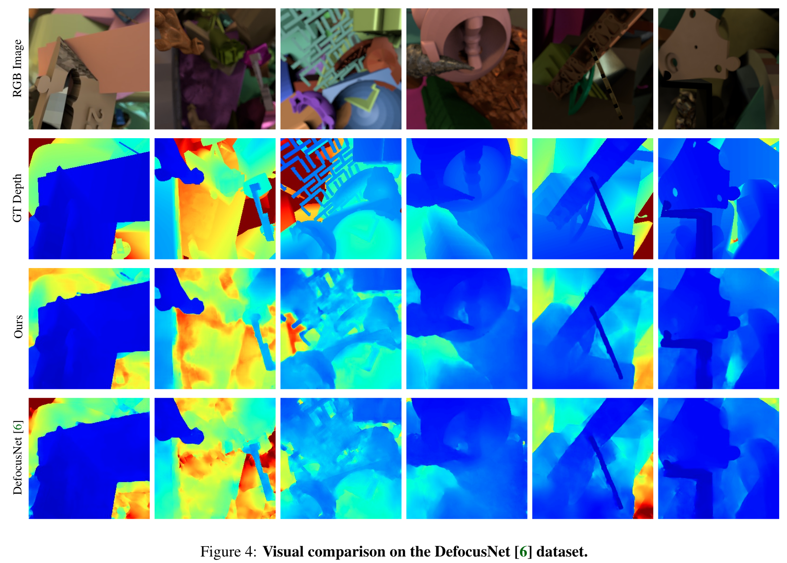
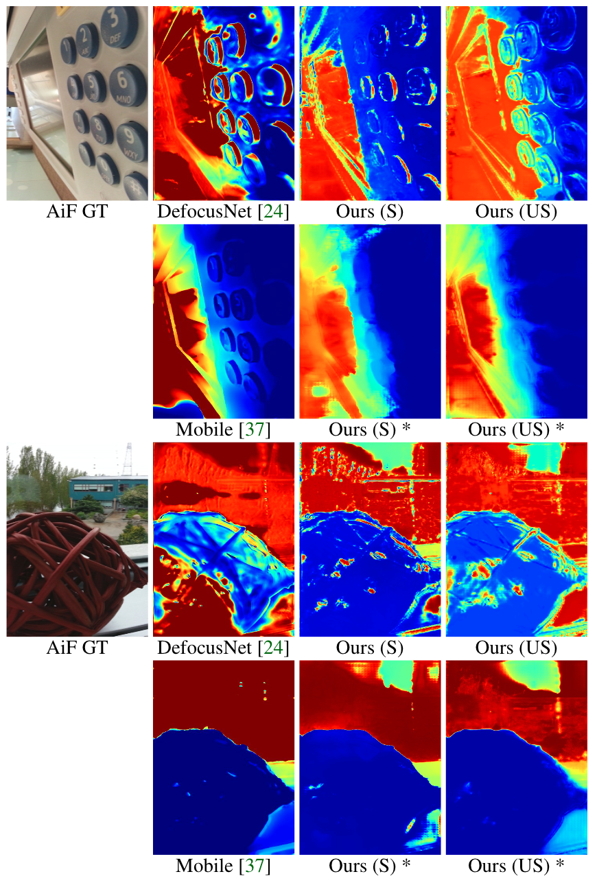

Abstract
Depth estimation is a long-lasting yet important task in computer vision.
Most of the previous works try to estimate depth from input images and assume images are all-in-focus (AiF), which is less common in real-world applications.
On the other hand, a few works take defocus blur into account and consider it as another cue for depth estimation.
In this paper, we propose a method to estimate not only a depth map but an AiF image from a set of images with different focus positions (known as a focal stack).
We design a shared architecture to exploit the relationship between depth and AiF estimation.
As a result, the proposed method can be trained either supervisedly with ground truth depth, or unsupervisedly with AiF images as supervisory signals.
We show in various experiments that our method outperforms the state-of-the-art methods both quantitatively and qualitatively, and also has higher efficiency in inference time.
Citation
Ning-Hsu Wang, Ren Wang, Yu-Lun Liu, Yu-Hao Huang, Yu-Lin Chang, Chia-Ping Chen, Kevin Jou, "Bridging Unsupervised and Supervised Depth from Focus via All-in-Focus Supervision", in International Conference on Computer Vision (ICCV), 2021
Bibtex
@inproceedings{Wang-ICCV-2021,
author = {Wang, Ning-Hsu and Wang, Ren and Liu, Yu-Lun and Huang, Yu-Hao and Chang, Yu-Lin and Chen, Chia-Ping and Jou, Kevin},
title = {Bridging Unsupervised and Supervised Depth from Focus via All-in-Focus Supervision},
booktitle = {IEEE International Conference on Computer Vision},
year = {2021}
}

Results
DDFF-12-Scene


4D Light Field Dataset


DefocusNet Dataset


Mobile Depth Dataset
